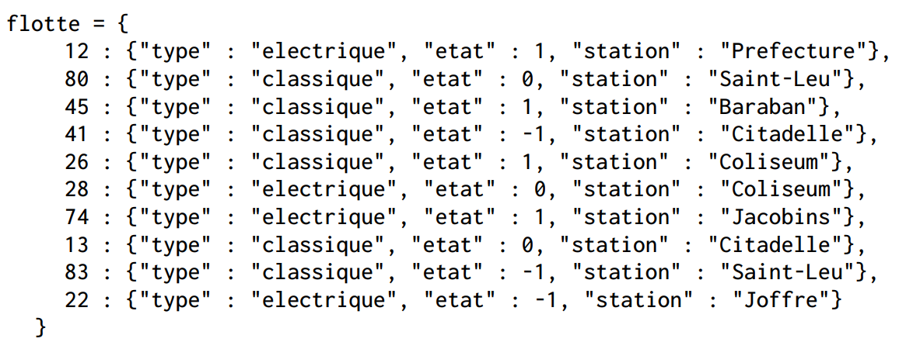
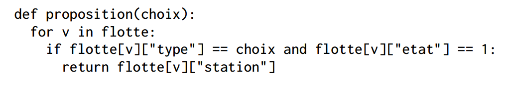
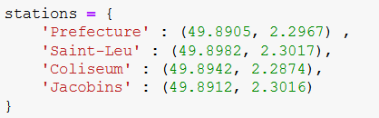

Exercices sur le modèle relationnel#
Exercice 1#
On considère dans cet exercice une gestion simplifiée des emprunts des ouvrages d’un CDI. La base de données utilisée est constituée de trois relations (ou tables) nommées Eleves, Livres et Emprunts selon le schéma relationnel suivant:

Dans ce schéma relationnel, un attribut souligné indique qu’il s’agit d’une clef primaire. Le symbole # devant un attribut indique qu’il s’agit d’une clef étrangère et la flèche associée indique l’attribut référencé.
Donner les clefs primaires de chaque relation.
Quelles sont les clefs étrangères de cette base de données. Que référencent-elles ?
Dans la relation élèves, on souhaite insérer les valeurs suivantes:
(128, ’Dupont’, ’Jean’, ’TNSI’)
(200, ’Dupont’, ’Jean’, ’TNSI’)
(128, ’Dubois’, ’Jean’, ’TNSI’)
Cette insertion génère-t-elle une erreur ? Expliquer.
Dans la définition de la relation Emprunts, qu’est-ce qui assure qu’on ne peut pas enregistre un emprunt pour un élève qui n’a pas encore été inscrit dans la relation Eleves?
Exercice 2#
On considère la table de données Films suivante :
Titre |
Année |
Réalisateur |
Note |
NbAvis |
Durée |
Type |
|---|---|---|---|---|---|---|
Apocalypse Now |
1979 |
Francis Ford Coppola |
8,4 |
578150 |
2h27 |
Drama, Mystery, War |
Full Metal Jacket |
1987 |
Stanley Kubrick |
8,3 |
644089 |
1h56 |
Drama, War |
Scarface |
1983 |
Brian De Palma |
8,3 |
704025 |
170 min |
Crime, Drama |
Orange mécanique |
1971 |
Stanley Kubrick |
8,3 |
725846 |
136’ |
Crime, Drama, Sci-Fi |
2001, l’odyssée de l’espace |
1968 |
Stanley Kubrick |
8,3 |
574171 |
2h29 |
Adventure, Science fiction |
Taxi Driver |
1976 |
Martin Scorsese |
8,3 |
685042 |
1h54 |
Crime, Drama |
source https://www.imdb.com
Proposer un modèle relationnel pour ces données.
Donner le contenu de chacune des tables.
Exercice 3#
On donne les extraits de trois relations d’une base de données:
Relation client
IdCt
Nom
Adresse
Mail
1
Jean Bon
2 rue Jean Mermoz - Caen
2
Alain Térieur
3 rue Paul Eluard - Hérouville
3
Thérèse Etroit
16 rue de la porte - Mondeville
4
Gilles Héjone
1 place de la bastille - Bénouville
5
Hélène de Troie
2 rue Néper - Caen
Relation produit
IdProduit
CodeProduit
NomProduit
Prix
Stock
1
12x24F
gel hydroalcoolique 100ml
3,21
2
2
21s53R
masque FFP2 x100
10,57
3
3
97D74S
visière de protection
0.50
10
4
10F36A
désinfectant industriel 10L
53,25
5
Relation commande pour un jour J :
IdCmd
IdClient
IdProduit
Quantité
Expedié
1
4
1
1
1
2
2
2
2
0
3
1
1
1
1
4
3
3
4
0
5
1
4
3
0
Donner le schéma relationnel de cette base de données.
Dans la relation commande quelle est la clef primaire ? Quelles sont les clefs étrangères ?
A combien s’élève le montant total des commandes de la journée J ?
Quels sont les noms des clients pour lesquels la commande a été expédiée ?
Exercice 4#
Une ville souhaite gérer son parc de vélos en location partagée. L’ensemble de la flotte de vélos est stocké dans une table de données représentée en langage Python par un dictionnaire contenant des associations de type id_velo : dict_velo où id_velo est un nombre entier compris entre 1 et 199 qui correspond à l’identifiant unique du vélo et dict_velo est un dictionnaire dont les clés sont : « type », « etat », « station ».
Les valeurs associées aux clés « type », « etat », « station » de dict_velo sont de type chaînes de caractères ou nombre entier :
« type » : chaîne de caractères qui peut prendre la valeur « electrique » ou « classique ».
« état » : nombre entier qui peut prendre la valeur 1 si le vélo est disponible, 0 si le vélo est en déplacement ou -1 si le vélo est en panne.
« station » : chaînes de caractères qui identifie la station où est garé le vélo.
Dans le cas où le vélo est en déplacement ou en panne, « station » correspond à celle où il a été dernièrement stationné.
Voici un extrait de la table de données :
{kind=link}
Toutes les questions de cet exercice se réfèrent à l’extrait de la table flotte fourni ci-dessus.
Que renvoie l’instruction flotte[26] ?
Que renvoie l’instruction flotte[80][« etat »] ?
Que renvoie l’instruction flotte[99][« etat »]
Voici le script d’une fonction:
Quelles sont les valeurs possibles de la variable choix?
Expliquer ce que renvoie la fonction lorsque l’on choisit comme paramètre l’une des valeurs possibles de la variable choix.
Écrire un script en langage Python qui affiche les identifiants (id_velo) de tous les vélos disponibles à la station « Citadelle ».
Écrire un script en langage Python qui permet d’afficher l’identifiant (id_velo) et la station de tous les vélos électriques qui ne sont pas en panne.
On dispose d’une table de données des positions GPS de toutes les stations, dont un extrait est donné ci-dessous. Cette table est stockée sous la forme d’un dictionnaire.
Chaque élément du dictionnaire est du type: ’nom de la station’ : (latitude, longitude)
On admet que l’on dispose d’une fonction distance(p1, p2) permettant de renvoyer la distance en mètres entre deux positions données par leurs coordonnées GPS (latitude et longitude).
Cette fonction prend en paramètre deux tuples représentant les coordonnées des deux positions GPS et renvoie un nombre entier représentant cette distance en mètres.
Par exemple, distance((49.8905, 2.2967), (49.8912, 2.3016)) renvoie 9591.
Écrire une fonction qui prend en paramètre les coordonnées GPS de l’utilisateur sous forme d’un tuple et qui renvoie, pour chaque station située à moins de 800 mètres de l’utilisateur :
le nom de la station ;
la distance entre l’utilisateur et la station ;
les identifiants des vélos disponibles dans cette station.
Une station où aucun vélo n’est disponible ne doit pas être affichée.
{kind=link}
{kind=link}